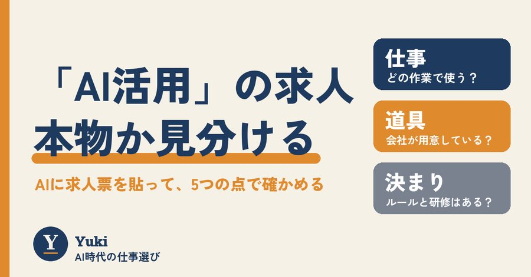
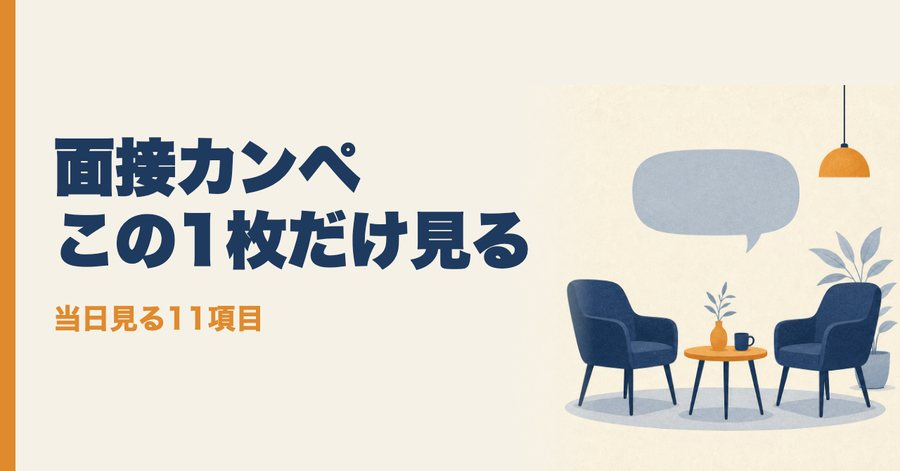

比べて、選ぶ
転職エージェントと転職サイトの比較は、このサイトにまとめています。
転職エージェントの選び方
全部に登録しなくていい。平日夜と土日しか動けない人が、最初に使う1〜2社を決めるための比較。
OPEN転職サイトの使い分け
自分で探す型と、スカウトを待つ型。働きながらなら、どちらを先に開くか。
OPEN20代・第二新卒向けエージェント
経験が短いことを前提に、職種選びから一緒に考えてくれる若手専門を4つ比較。
OPEN30代の転職エージェントの選び方
総合型1社とスカウト型1つの組み合わせから始める。
OPENIT転職エージェントの選び方
経験者向けと、若手・未経験寄り。経験の長さで最初の1社を決める。
OPEN応募する前に、求人と書類
いい言葉が並ぶ求人票から、実際の条件を読み取る。AIに貼れば、点数と本当の時給まで出せます。職務経歴書の直し方も。
職務経歴書と面接、AIで準備する
AIに質問させて書類を作り、面接官役で練習する。
OPEN
「生成AIを活用」と書く求人は本物？
AIに求人票を貼って、本気度を5つの点で見分ける。指示文3つ。
READ ON NOTE
職務経歴書に「AIを使えます」と書いていい？
ChatGPTの経験を、面接で話せる1行にする書き方。指示文つき。
READ ON NOTE
職務経歴書をAIに直したら、立派すぎる文に？
面接で詰まらない文にする指示文と、避けたい言い方8つ。
READ ON NOTE
固定残業代の求人は損？
「45時間分を含む」の求人を貼るだけで、基本給と本当の時給が分かる。
READ ON NOTE
求人票の点数をAIで出す方法
「この求人どう？」で一般論しか返らないとき。求人票を貼るだけで点数が出る指示文。
READ ON NOTE
年収レンジの読み方
「400〜700万円」の上限を信じていいか。下限で判断する理由と確かめ方。
READ ON NOTE
求人票の見方
6項目100点で採点すると、応募で迷わなくなる。採点表つき。
READ ON NOTE応募したあと、面接と内定
進み具合の管理、面接のカンペ、逆質問、内定通知書の確かめ方。
面接で「AIをどう使っていますか」と聞かれたら？
30秒で答える型と、AIで作る答えの原稿。指示文つき。
READ ON NOTE逆質問、AIに作ってもらっていい？
求人票を貼るだけで、年収や残業も角を立てずに聞ける逆質問を作る指示文。
READ ON NOTE「他社の選考状況は？」の答え方
選考状況をAIに貼るだけで、聞かれるたびにずれない答えが1文で作れる。
READ ON NOTE
転職活動の管理方法
応募が増えて、どこまで進んだか分からないとき。連絡をAIに貼るだけで表が更新される。
READ ON NOTE
転職面接のカンペの作り方
当日はこの1枚だけ見ればいい。11項目のカンペの作り方。
READ ON NOTE転職の内定通知書チェック
口頭の説明と書面がちがったら。サインの前に確かめること。
READ ON NOTEnoteのマガジンで、まとめて読む
転職の記事は、noteのマガジン「AIで転職を、仕組みにする」にまとめています。フォローしておくと、新しい記事が届きます。